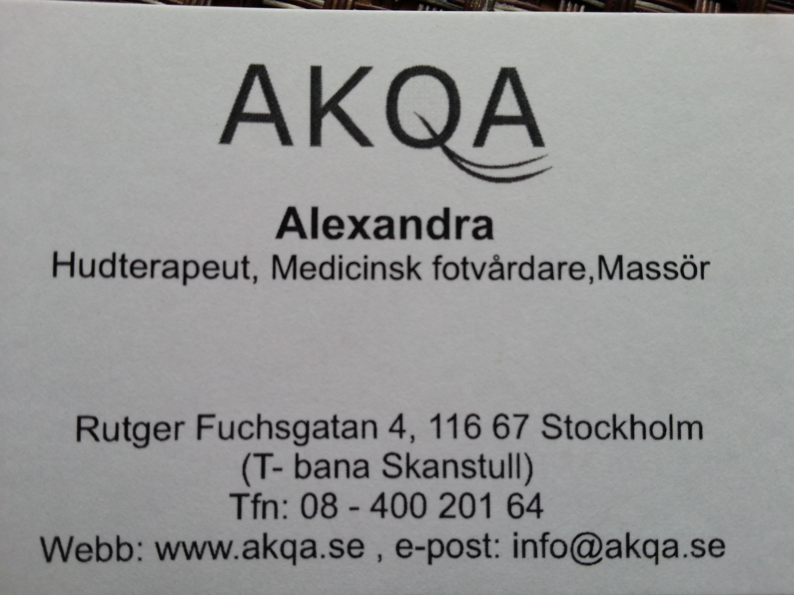
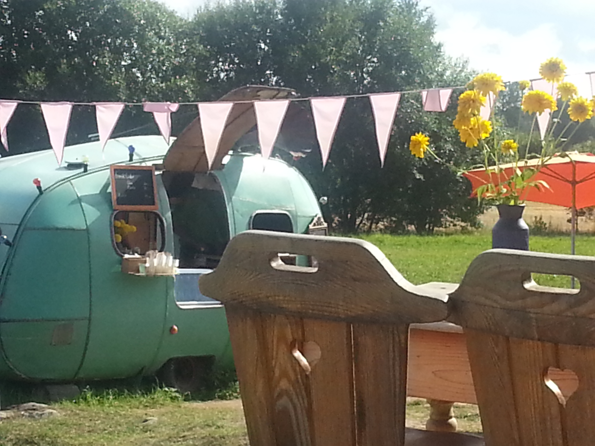
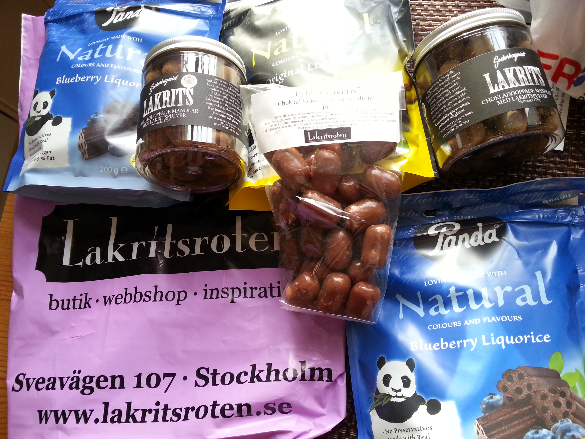
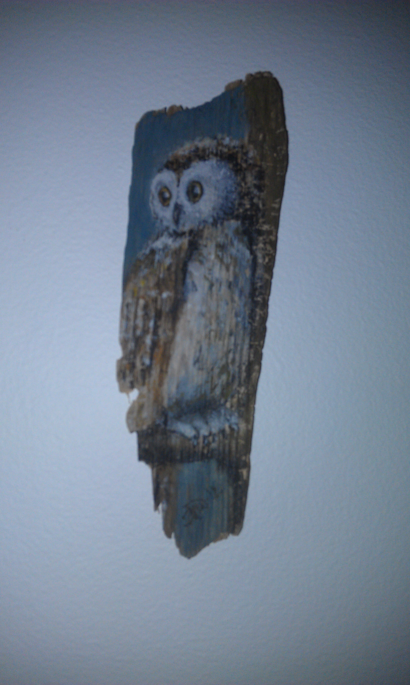

Hudterapeut Alexandra
Alexandra på Akqa är en väldigt proffsig och servicemedveten person. Hon är mycket kunnig inom sitt område.
Creperie
Det mobila creperiet sköts av en fransman och hans svenska fru. På deras sida kan man läsa vart i Sverige de befinner sig för tillfället. Maten är utsökt!
Lakritsroten
Mycket bra service och stort utbud. Går även att beställa online.
Vrak konst
Konst gjord på vrakdelar funna runt om i Sverige. Mycket trevlig utställning i Grisslehamn främst under sommarmånaderna och överkomliga priser.